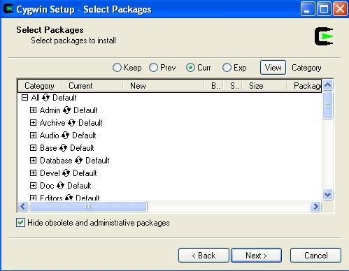
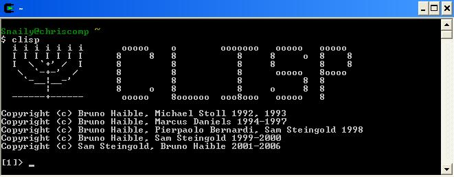

LISP is a seasoned, high-level programming language that is especially good for artificial intelligence. It is mostly used as an interpreted language (a program is running to interpret programming commands), but most versions of LISP will also let you compile your code into binary executable files as well.
You may be wondering where this language got its name (no, it's not because the people who administer the ACSL exams have a speech impediment). It's actually because LISP is a "list processing" programming language. Everything in LISP, including functions, variables, and operators, are stored in lists. Because LISP has been around since the 1950s, many different versions are in existance. The one I like to use is called "CLisp," which is short for "Common Lisp." A whole bunch of people have gotten together and agreed on some standards to put into this version. Common Lisp is very similar to ACSL lisp, but there are a few minor differences. When I do my examples, I will point out any differences between what you may see on the ACSL contest and what you'll end up writing if you code LISP for real
The ACSL exam only goes into the basics of LISP programming, but I'm going to add on a bit more to the typical curriculum so that you may even be able to use it to write your programs for the contest. LISP also gives me the opportunity to review recursion, as you will soon see.
Most people who use LISP use it under a Linux terminal. These people will simply have to find the common lisp source, unzip it, compile it, and run it. Even if you're using Windows (you like to take risks, Bill Gates has personally threatened your life, or if you're like me and just can't get your new video card to work under Linux for some reason), you can still run it. The best way to do this is to download and install a sort of "Linux Emulator" called Cygwin. Cygwin is awesome, because it lets you run nearly any program native to Linux under Windows (and, like everything in the open-source community, it's completely free). For this lesson, we're the most interested in installing the "CLisp" package, but I'm going to ask you to install some other packages that will help in later lessons. Follow the steps below to get the emulator working:
First, download the setup.exe installer executable from cygwin.com
Start setup.exe, click "next," and choose to install from the internet (NOTE: You must maintain a live internet connection during this installation)
Choose a directory to which to install Cygwin, and choose a directory to which the compressed packages will be downloaded
Choose an internet connection type and a mirror from which to download all packages
Once you have found a working mirror, a package selection screen should pop up that looks like this:

Ensure that the following packages are checked off (in addition to what's already there):
Under Base
bash: The GNU Bourne Again SHell
coreutils
findutils
tar: a GNU file archiving program
zlib
Under Devel
autoconf
All of the automake packages
clisp: An ANSI Common Lisp implimentation
(this is the whole reason we're doing this, so DON'T FORGET TO CHECK THIS ONE OFF!!)
cmake
ctags
gcc-core: C compiler
gcc-g++: C++ compiler
Under Doc
man
perl_manpages
xpdf
Under Editors
emacs
gvim
hexedit
nano
nedit
vim
xemacs
Under Interpreters
clisp
Perl
xemacs
Everything under KDE (4 items total)
Under Web
links
naim :-D
wget
Check off everything under X11 if you have room on your hard drive
Obviously, if there's anything else you want to check off, you don't have to ask my permission to do it. There's lots of cool, free Linux software out there; I've merely highlighted a few of the most pedagogical packages.
Click "next" and wait for everything to download and install. When all is said and done, you should have a shortcut to clisp somewhere in your start menu/on your desktop. Every time you click on the shortcut to Cygwin, a beautiful Linux terminal should pop up that looks like this:

Type clisp, hit ENTER, and you're ready to start interpreting some LISP commands.
As I said before, everything in LISP is a list. These lists all have elements, which are known as "atoms." Unlike variables in languages such as C++ and Java, LISP atoms aren't a particular variable type such as short or double. Instead, they can be just about anything that you want them to be. Here is an example list below:
(A CHRIS 3.141 90 EXCELLENT -111)
So hopefully you've noticed that a list has all of its atoms inside of parentheses, that each atom is separated by a space, and that atoms can be words, characters, floating point numbers, or integers (and a whole other host of things).
If you typed that list into the clisp interpreter, it wouldn't really do much; it would just yell at you. This is because LISP likes to evaluate everything that you give to it. When it looks at the list (A CHRIS 3.141 90 EXCELLENT -111), it first tries to evaluate A. But A isn't a function, and it's not a variable (yet), so the interpreter spits back an error message when you hit ENTER. The easiest way to explain how this process works is to launch into some examples
>(+ 4 5)
9
This list actually evaluates to something. First, the interpreter looks at +, which is a function set up to add numbers together (function calls in lists are single elements as well). The interpreter now expects two more parameters that can be evaluated, and it finds them: 4 and 5. All numbers by themselves evaluate automatically to the values that they represent, and they cannot be used as variable names for this reason.
NOTE: In ACSL, + will be ADD, * will be MULT, - will be SUB, / will be DIV, etc. Most of them are pretty self-explanatory, but I thought I should point that out anyway.
NOTE ALSO: You can give the + function any number of arguments, even 1. For instance (+ 4) returns 4, and (+ 1 2 3 4) returns 10.
Note that (- 4 6) translates to "4 - 6" in infix (what we're used to). It's the same thing with (/ 100 25), which is 100/25. Having the operator before the operands is known as "prefix" form, and it will be covered in more depth in a later lesson.
Also look at how the set of nested lists (+ (* 3 (/ 60 10)) -4 6) is evaluated. After it sees the + sign, the interpreter knows it needs to evaluate the first parameter list (* 3 (/ 60 10)) before it can go on. This inner list evaluates to 3 * (60/10), 3*6, 18. Then, the + operator can add 18, -4, and 6.
In this example, we're going to try to look at how to bind values to variables. In LISP, you don't have to declare variables; almost everything is a potential variable (except for functions, constants, and the like that are already bound). However, "variables" are usually no good unless they are bound to something and can be evaluated.
> (set A 3)
*** - EVAL: variable A has no value
> (eval A)
*** - EVAL: variable A has no value
> (set 'A 3)
3
> (eval A)
3
> (setq A 42)
42
> (eval A)
42
This example shows how LISP tries to evaluate everything that you give it. Usually, the set function is used to bind values to variables. At the beginning, we were trying to give A the value of integer 3 by typing (set 3). However, this ironically doesn't work, because A is not bound to anything yet when the function is first called. When the Lisp interpreter first sees this list, it says something like this: "okay, we're using the set function, so look for two parameters. First parameter (the variable) is A. Evaluate A...WHAAAM!! A doesn't have a value yet, so everything quickly deteriorates. When we use the eval function to see what's in A, we get the same error, because the set function did not complete properly (hence, A is still unbound).
To tell LISP to avoid evaluating something for the time being, we put a quote (') before it. This is why (set 'A 3) actually work. LISP now sees the quote when it looks at the variable parameter of the set function, so it knows to ignore A. Then, it sees 3, which evaluates to 3 (big surprise there), and it stores 3 in A (or "binds" 3 to A, as I have been saying).
Programmers are lazy, forgetful people sometimes, so LISP also has the function setq which automatically builds the quote into the first parameter. This way, you can just write setq instead of set ' every time you want to bind a variable to something new.
NOTE: When the set function has finished evaluating, it returns whatever you just set the variable to. Hence, the list (setq A (setq B 10)) would set both A and B to 10.
Okay, so now we know how to store a single value into a variable to make it an atom. But what the heck do we do if we want to store a list into a variable? Let's look at some examples:
>(setq testlist (+ 2 3))
5
>testlist
5
>(setq testlist '(+ 2 3))
(+ 2 3)
>(eval 'testlist)
(+ 2 3)
>(eval testlist)
5
>(setq cool '(HEY THIS IS A REALLY COOL LIST THAT ISN'T GOING TO BE EVALUATED))
(HEY THIS IS A REALLY COOL LIST THAT ISN'T GOING TO BE EVALUATED)
>(eval cool)
*** - EVAL: undefined function HEY
Once again, we have to make good use of the quote ('). As you can see by the first example, the omission of the quote before the list to which we are trying to bind the "testlist" variable caused the list to be evaluated before it was stored. Luckily, putting the quote before the list in question solves this problem. You should also notice that later, when using the eval function, the quote is still needed if we want to view the contents of the list without evaluating it. I just threw in the last example to show that you don't have to have functions in the list for it to be stored, but you may not be able to evaluate it later.
One thing that I should definitely mention before we go on is the existance of the special constants T and NIL:
>(setq A 7)
7
>(setq B '(TEST LIST WITH 3))
(TEST LIST WITH 3)
>(atom A)
T
>(atom B)
NIL
>(atom '(3.141 IS ALMOST PI))
NIL
>(atom +)
NIL
>(atom 4)
T
The atom function is a boolean function evaluates to true if its parameter is an atom, and false if the parameter is not an atom. In LISP, though, boolean values true and false are T and NIL respectively. Hence, the atom function returns NIL when it is given a list or a function (these are not atoms).
NOTE: NIL is equivalent to an empty list ().
NOTE ALSO: The ACSL exam may actually use "true" instead of T, so watch out for this
Now that we know how to store lists into variables, we need to figure out how to change their contents without having to overwrite them every single time. There are four main functions that you should remember, and I will cover them through some different examples:
CONS: The cons function is used to build lists. It adds something onto the end of a list you give it. Let's look at some examples:
>(setq A '(THIS IS))
(THIS IS)
>(cons A '(A LIST))
((THIS IS) A LIST)
>(cons 1 (cons 2 (cons 3 NIL)))
(1 2 3)
This is pretty self-explanatory; cons takes a list as a first parameter, and it adds the second parameter to the end of the list. Just pay special attention to what's happening in the second example with the nested lists and NIL. First, the inner list evaluates to (3), because it's adding 3 to (). Then, 3 is added onto the end of 2, giving the list (2 3). Finally, the outer cons function is reached, and (2 3) is added to 1, giving (1 2 3).
CAR and CDR: The car function returns the first atom of a list, while cdr returns a list containing everything but the first element:
>(setq testlist '(THIS IS A TEST LIST))
(THIS IS A TEST LIST)
>(car testlist)
THIS
>(cdr testlist)
(IS A TEST LIST)
>(car (cdr (cdr testlist)))
A
>(cons 'THAT (cdr testlist))
(THAT IS A TESTLIST)
>(atom (car testlist))
T
>(atom (cdr testlist))
NIL
>(cdr '(1))
NIL
>(eval 'testlist)
(THIS IS A TEST LIST)
>(setq testlist (cdr testlist))
(IS A TEST LIST)
>(eval 'testlist)
(IS A TEST LIST)
The first two examples are straightforward, as they follow from the definition of the functions. (car (cdr (cdr testlist))) returns the third element, or "A," from testlist, because the inner cdr functions have dropped the first two elements, making A the first element by the time the car function is called.
In the fourth example, cons is used in conjunction with cdr to replace the first element "THIS" with "THAT" in the returned list.
The two examples with the atom function show that car always returns an atom, but cdr usually doesn't.
The evaluation of the list (cdr '(1)) shows that if the cdr function is called on a list with only one atom, then an empty list (), or "NIL," is returned.
The last slew of statements stress a very important point about how LISP returns function values. Even though the car, cons, and cdr functions have been used multiple times on "testlist," no permanent changes have been made to that variable. This is why we have to use the setq function to overwrite testlist if we want to store the results of these functions at any point in time. If you are familiar with C++ or Java, this is equivalent to doing x=x+1, or x++ to increment x. Simply saying x+1 would not make a permanent change to any variable in this instance.
NOTE: For those of you familiar with linked lists and pointers, the car function is a pointer to the first element in a linked list, while cdr is a pointer from that element to the next element and the rest of the list. Cdr returns a sublist, which also has a car pointer to its first variable (and so on and so forth).
If cons, car, and cdr were the only list-operating functions we knew, we would be able to get by. However, it would be a real pain to try to replace atoms at an arbitrary position within a list, because you would have to break the list up into a bunch of little pieces and try to combine them all again later (this gets very ugly very quickly). If you enjoy subjecting yourself to mental anguish, then I suggest trying this sometime. However, I strongly recommend using the setf function instead (the ACSL conveniently forgets to mention this function).
SETF: Given a list, a position within a list, and an atom, this function replaces the atom currently in the list at the given position with the atom specified, and it stores the new list in memory.